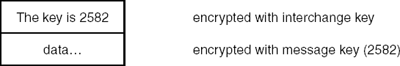

Networking Security Networking Security Networking Security Security Networking Security Networking Security Networking Charlie Kaufman Radia Perlman Mike Speciner Prentice Hall Network Security: Private Communication in a Public World, Second Edition
21.3. Establishing Keys
Suppose Alice is sending a message to Bob. For an integrity check, or for encryption, PEM has to find appropriate cryptographic keys. The per-message key used to encrypt a message is just a randomly selected number. But there is also a long-term key which PEM refers to as an interchange key. When public keys are used, the interchange key is Bob's public key. When secret keys are used, the interchange key is a key Alice and Bob share.
The interchange key is used to encrypt the per-message key:

PEM gives no hint as to how to establish secret key based interchange keys. The assumption is that there is some out-of-band mechanism for doing it, for instance calling someone on the phone and agreeing on a number. The PEM designers could have allowed fields for Kerberos-style tickets to be carried in the message, but interest in secret key based interchange keys for PEM is low, so there hasn't been a lot of thought on how to deploy secret key based PEM.
In the case of PEM based on public key technology, PEM defines a certification hierarchy based on the X.500 naming hierarchy. A hierarchical naming scheme means that names contain multiple components, like A/B/C/D, reflecting a tree structure where each successive component gives the next branch downwards. Having the certification hierarchy follow the naming hierarchy means that there is a CA named A/B/C that issues certificates for all the names of the form A/B/C/*, and there's a CA named A/B that certifies all the names of the form A/B/* (including CA A/B/C).
While it is hoped that eventually there will exist a global directory service in which all certificates can be stored to make them universally available, the PEM designers considered it important to be able to operate before such a directory service was deployed. For that reason, they specified how the header of a PEM message could contain certificates relevant to authenticating the sender of the message. This not only permits the receiver to verify the signature of a message without access to a directory service, it provides a convenient method for Bob to deliver certificates to someone who needs to know Bob's public key in order to send him an encrypted message.
Thus a convenient way for Bob to send Alice the necessary certificates is for Bob to use PEM to send Alice a message including all necessary certificates in the header. Note that even if Alice and Bob intend that all of their conversations be encrypted, the first message one of them sends the other must be unencrypted (since neither yet knows the other's public key). This will not be necessary if Alice can look up Bob's certificates in some directory service.
Note that certificates take up a lot of room, and they may not be necessary. Indeed, Alice may have cached Bob's certificates. In that case, there is no reason for Bob to send the certificates. Some PEM implementations allow the user to tell PEM to leave out the certificates for a particular message. If Bob sends a message without the certificates, but Alice really doesn't have them, then Alice can send Bob a message (or call him on the phone) and ask him to send a message with the certificates. Or perhaps she can retrieve them from the directory service.
 |